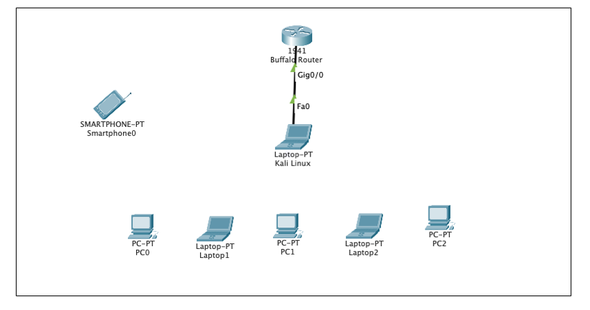

Here you can check out my projects page and you can select a project you want to take a look at on the navbar!
Wireless Security Project
Here you can learn about the overview of wireless security and why it's important.
Wireless security issues are discussed by providing examples of how these attacks occur along with the descriptions for each attack that made wireless networks vulnerable. Precautions of these issues are mentioned that will keep the wireless networks secure along with preventing private data that is misused. A video has been created to demonstrate what to do in the wireless security experiment that has been created for the course I am working as a TA in.
Security Issues in Unix/Linux
Here you can learn about the overview of Unix/Linux Systems and why it's important.
Problems related to Linux operating system security are discussed along with the importance of security in the Linux operating system. Linux is the most secure operating system that exists. The common issues related to the Linux operating system security are discussed by providing real-world based examples and explanations of how these attacks occur and how we can resolve the issues. Important commands regarding the Linux Operating System are discussed to inform viewers on what are countermeasures they can use to keep their systems protected from servers that are not secure, application bugs and configuration vulnerabilities.
Division of IT Student Position
Here you can check out the experience I've had while working with Division of IT at Mizzou!
I've communicated with other team members along with full time IT staff at Mizzou to achieve the requirements of the Technical Response Team. Responded to ticket escalation when there are team members who can’t figure out what the purpose of the ticket is. Monitored incoming tickets that the full time IT staff will send out if there are important issues that need to be resolved. Picked up and delivered technical equipment when there was a staff member that needs to have certain equipment replaced or when there are issues that need to be fixed before the staff members are able to use the systems again. Prepared systems on multiple operating systems for staff members so that they will be ready for the system needs in their workstations on campus. Worked with staff members to troubleshoot issues if there are problems with their computers by identifying what was the cause of the problem to occur, proposing plans to responding to the issues, attempting the solutions, and getting the problems resolved. Maintained inventory by recording system details for tracking in order to determine whether the systems are reusable or need to go to surplus.